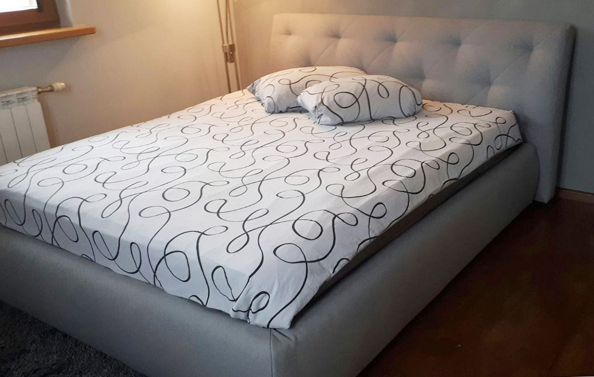

Miegamojo lova Nikole – Guru Baldai
 Pereiti prie turinio PRISTATOME VISOJE LIETUVOJE! Miegamojo lovos Svetainės baldai Čiužiniai Spintelės Susisiekite telefonu+370 612 11133 Susisiekite telefonu
+370 612 11133 Krepšelis
Krepšelis tuščias Meniu Meniu Miegamojo lovos Svetainės baldai Čiužiniai Spintelės Pirkinys įdėtas į krepšelį. Uždaryti Uždaryti -31%
Miegamojo lova Nikole
Kaina €329,00 €227,00 Su pakeliamu mechanizmu Patikimas ir patvarus rėmas Tik aukštos kokybės medžiagos PRISTATYMAS VISOJE LIETUVOJE 2 METŲ GARANTIJA SAUGUS ATSISKAITYMAS KOKYBIŠKI BALDAI Aprašymas Garantija Lizingas Pristatymas Lova Nikole su pakėlimo mechanizmu yra geras atradimas tiems, kurie vertina kompaktiškumą ir erdvumą. Tokia lova taps išsigelbėjimu mažam kambariui, kur nėra galimybės sutalpinti papildomų baldų daiktų laikymui.
Modelis aprūpintas mechanizmu, kurį lengva pakelti, ir suteikia galimybę patekti į didelę daiktadėžę, skirtą patalynės ir kitų daiktų laikymui.
Universalaus ir estetiško dizaino miegamojo lova su aukštu galvūgaliu (galvūgalis nepaminkštintas) harmoningai atrodys bet kokio stiliaus miegamajame.
PRODUKTO SPECIFIKACIJOS:
Ilgis: 212 cm
Plotis: 129/149/169/189 cm
Aukštis: 31 cm (kai lovos miegojimo plotis 120 /140) arba 35 cm (kai lovos miegojimo plotis 160/180)
Nugaros aukštis: 90 cm ( kai lovos miegojimo plotis 120 /140) arba 101 cm ( kai lovos miegojimo plotis 160/180)
Patalynės dėžė: YRA.
Patalynės dėžės dugnas: medžiaga.
Pakėlimo mechanizmas: dujinis (pakėlus fiksuojasi viršuje)
Grotelės: YRA (su metaliniu rėmu)
Gamintojas: Baltarusija
Baldas surinktas: NE
Be čiužinio , bet galima pas mus užsakyti atskirai.
Atkreipiame dėmesį, kad elektroninėje parduotuvėje esančių prekių ar / ir audinių spalva, forma ar kiti parametrai gali neatitikti realybėje esančių dėl Pirkėjo naudojamo įrenginio vaizduoklio ypatumų bei nustatymų. Jei prekės medžiaga yra su raštu, galimas jo nesutapimas su pavaizduotu nuotraukoje.
Visiems Guru Baldai parduodamiems produktams yra taikoma 2 metų garantija.Mūsų produktus galite įsigyti išsimokėtinai. Suformuokite užsakymą, apmokėjimo puslapyje pasirinkus "Paysera" atsiskaitymo būdą būsite nukreipti į langą, kuriame galėsite pasirinkti GFLIZINGAS arba MOKILIZINGAS lizingo paslaugas.
Jeigu turite klausimų dėl pirkimo išsimokėtinai, susisiekite el. paštu info@gurubaldai.lt arba telefonu +370 612 11133.
Jeigu gavus užsakymą ir apmokėjimą norimos spalvos ir matmens produktą turime sandėlyje, pristatysime jį per 2-7 darbo dienas. Jei ne, užsakymo gamybos terminas papildomai apie 15-30 darbo dienų.
Visos gurubaldai.lt prekės, visoje Lietuvoje, išskyrus Kuršių Neriją, pristatomos už 15 Eur mokestį.
Jeigu turite klausimų dėl gamybos termino, ar galime siųsti į tam tikrą užsienio šalį ir kt., susisiekite el.paštu info@gurubaldai.lt arba telefonu +370 612 11133.
KLIENTŲ ATSILIEPIMAI
Klientų atsiliepimai 4,9 13 klientų įvertinimai 5 ★ 92% 12 4 ★ 8% 1 3 ★ 0% 0 2 ★ 0% 0 1 ★ 0% 0 Customer Photos i i i i i i RAŠYTI ATSILIEPIMĄ Užduokite klausimą Atsiliepimai KlausimaiDėkojame, kad pateikėte atsiliepimą!
Jūsų nuomonė mums yra labai svarbi. Pasidalinkite ja su draugais.
Facebook Twitter Be the first to review this item Sort Su nuotraukomis Naujausi Geriausiai įvertinti Blogiausiai įvertinti Daugiausiai balsų Filter Reviews: × Sort Su nuotraukomis Naujausi Geriausiai įvertinti Blogiausiai įvertinti Daugiausiai balsų Clear filters More Filters MP 2020-10-07 Marius P. Lithuania Nikol lovaLova patenkinti, gal šiektiek žemoka. Surinkimo metu nebuvo vienos skylės groteliu rėme teko pasidaryti pačiam ☺️
Miegamojo lova Nikole 180 x 200 cm / PB-BEIGE Ar atsiliepimas naudingas? 2 0 AP 2020-10-07 Akvilija P. Lithuania Lova puiki.Rekomenduoju..Surenkant visos detales buvo.
Miegamojo lova Nikole 180 x 200 cm / Barchat 03 Ar atsiliepimas naudingas? 0 0 LP 2020-09-30 Lina P. Lithuania Miegamojo lova NikoleIeškojau lovos su galvūgaliu tiksliai pagal išmatavimus (ribota erdvė). Būtent ši man labai tiko. Eko oda gal kietoka, bet lengvai valoma. Esu labai patenkinta
Miegamojo lova Nikole 140 x 200 cm / PB-BEIGE Ar atsiliepimas naudingas? 1 0 AR 2020-09-24 AGNĖ R. Lithuania Rekomenduoju.Lova visiškai atitiko lūkesčius, kokybė super, esam labai patenkinti:) sėkmės darbuose :)
Miegamojo lova Nikole 160 x 200 cm / Barchat 18 Ar atsiliepimas naudingas? 1 0 ŽŽ 2020-06-25 Živilė Ž. Lithuania Lova NikolePirkiniu labai patenkinta.
Miegamojo lova Nikole 160 x 200 cm Ar atsiliepimas naudingas? 1 0GURU BALDAI - kokybiški baldai internetu. Papildykite savo namus išskirtinio dizaino baldais jau šiandien!
+370 612 11133 | info@gurubaldai.lt
Informacija Apie mus Pirkimo taisyklės Pristatymo taisyklės Privatumo politika Kontaktai Meniu Visi produktai Miegamojo Lovos Svetainės baldai Čiužiniai Spintelės